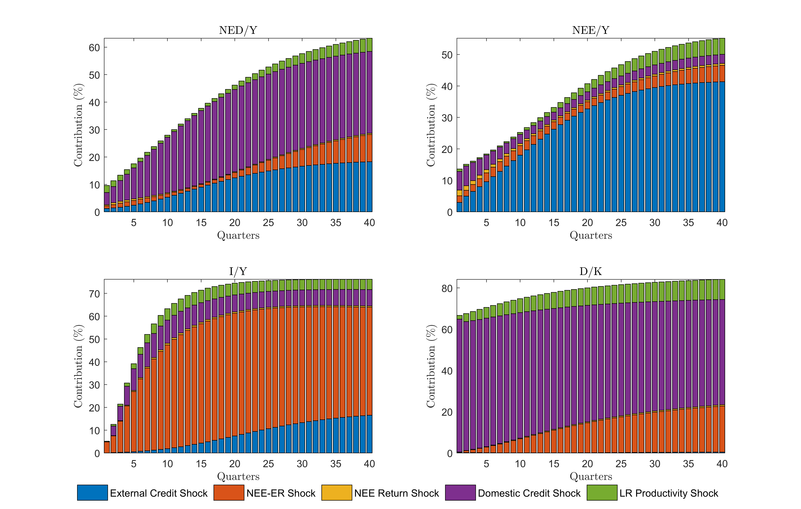
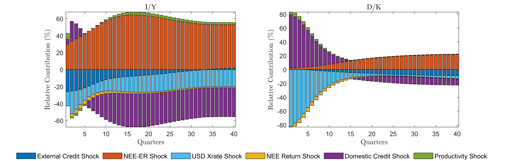
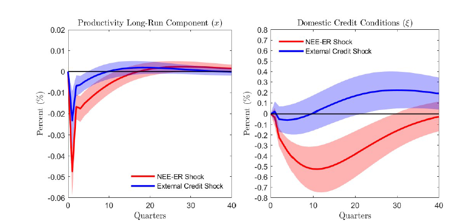
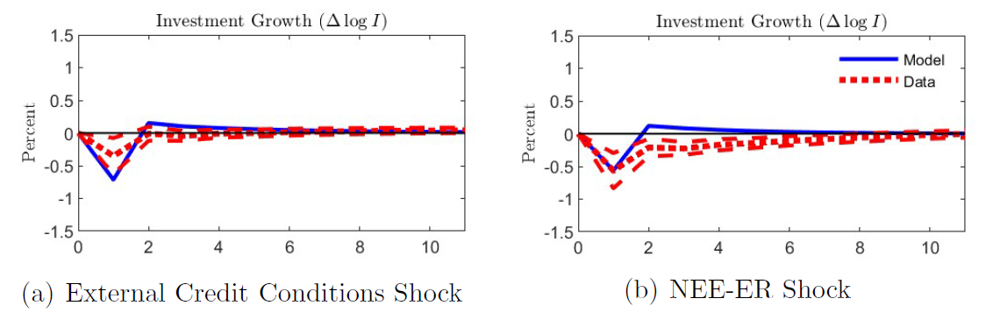

Our paper documents empirical facts about small developed open economies (SDEs) and shows that SONOMA reproduces their financial-flow, asset-price, and business-cycle patterns. The figures below present selected empirical findings from the paper.
Fact 1
Financial shocks shape external positions and investment
Financial shocks are first-order drivers of medium- and long-run fluctuations in external debt, external equity, and investment. Domestic credit shocks are especially important for external debt, while external credit shocks and external equity-market shocks play prominent roles in external equity and investment.

Figure 1: Relevance of Exogenous Shocks.Forecast error variance decompositions for net external debt, net external equity, investment, and corporate leverage.
Fact 2
Financial shocks differ between SDEs and EMEs
Expected external equity-return shocks play a larger role in SDE investment and leverage. In emerging market economies (EMEs), investment is relatively more sensitive to credit shocks, while exchange-rate and unexpected external equity-return shocks are more prominent.

Figure 2: Difference in Relevance of Exogenous Shocks: SDEs Minus EMEs.VAR specification including exchange-rate shocks.
Adverse external credit and expected external equity-return shocks are associated with lower expected long-run growth. Adverse expected external equity-return shocks also precede tighter domestic credit conditions.

Figure 3: Empirical Impulse Responses to External Financial Shocks.
Fact 4
External financial shocks contract investment
Adverse external credit and expected external equity-return shocks produce substantial declines in investment. SONOMA successfully reproduces these contractionary responses.

Figure 8: Model versus VAR: Economic Aggregates.Investment responses.